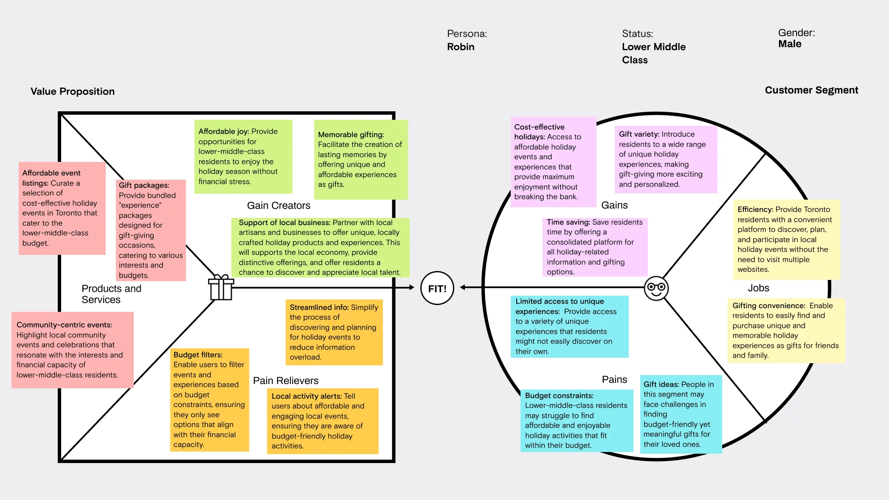
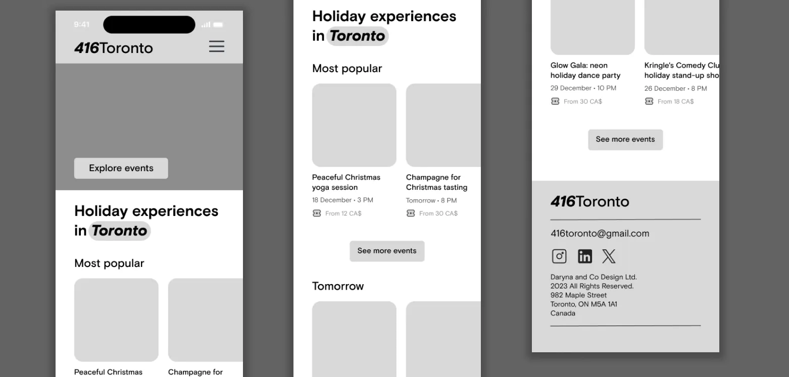
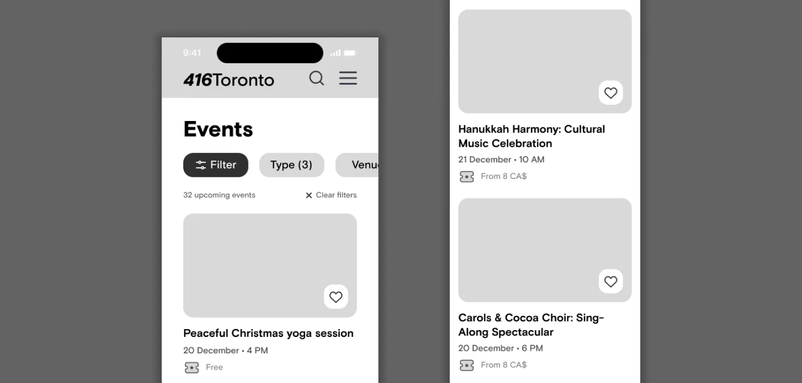
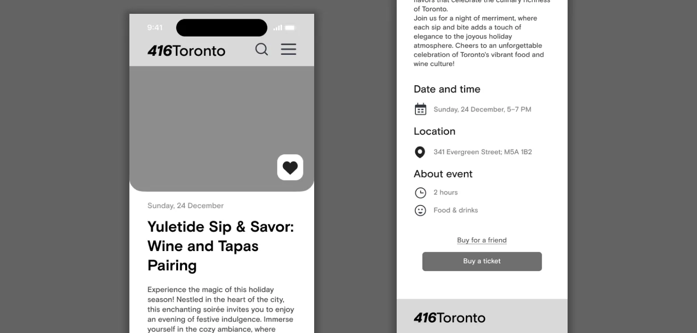
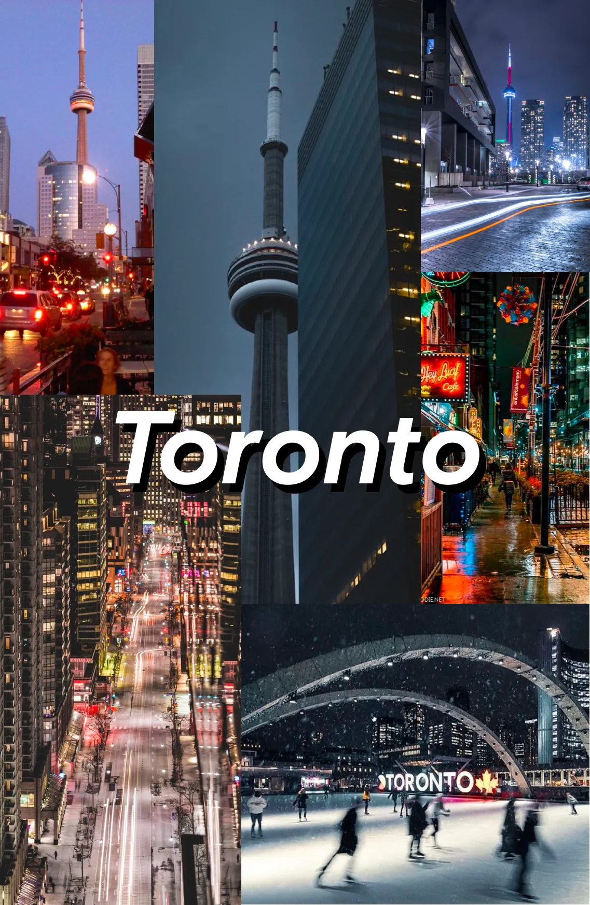
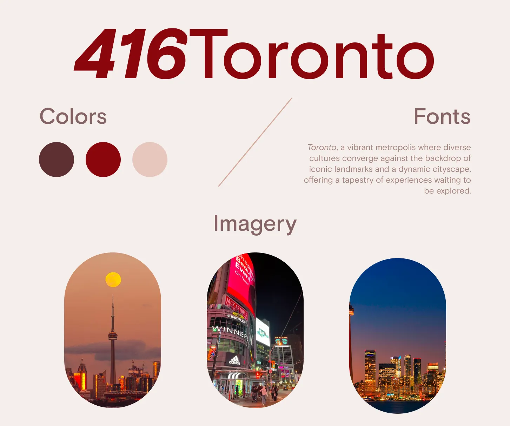

OVERVIEW
For this project, I chose to address a problem I have personally
experienced. The app is designed to bring together various
holiday-related events and experiences in Canada. The target
audiences include newcomers to Toronto, Canadian tourists
visiting Toronto during the holidays, Toronto residents, and
people who struggle with finding gift ideas each holiday
season.
My process involved defining the problem, identifying the
primary audience, conducting secondary and competitive research,
developing value proposition canvases, designing wireframes and
moodboards, and finalizing the prototype.
PROBLEM
The problem I've chosen to address is the lack of a single
platform that brings together holiday events and experiences.
When a holiday season comes around, those who have lived in
Toronto for a while likely already have their favourite spots
and traditions. However, for newcomers, it can be isolating to
have no connections and spend the holidays away from family
without a clear way to socialize.
416Toronto is a platform for holiday-related events and
experiences. Instead of searching across multiple sources, users
can find everything in one place. Moreover, it provides a space
for immigrants to share and participate in their cultural
traditions away from home.
TARGET AUDIENCE
The target audience for this project includes newcomers to
Toronto as the primary audience, Canadian tourists visiting the
city during the holidays as the secondary audience, and Toronto
residents, as well as individuals who struggle with finding gift
ideas each holiday season, as the tertiary audiences.
While it would be ideal to expand to other major cities, I
decided to focus on developing a minimum viable product first,
to refine the concept and better meet the needs of the users.
SECONDARY RESEARCH
Before conducting primary research, I did secondary research to
understand the market and user needs. I focused on browsing
Toronto-related communities on Reddit and Facebook to learn
about people's holiday activities.
Key findings:
- Many people ask others about holiday events happening in the
city.
- There are questions about spending holidays on a tight
budget.
- Users seek locations for "Instagrammable" photos.
- People ask about unique restaurants, cafes, and takeout
options.
- Many, including students, parents, and tourists, ask about
gift ideas, though the suggestions are general.
- Some people feel Toronto isn't great for holidays, which could
be due to the lack of a centralized platform for events. Despite
Toronto's large population, it seems there's a need for an
easier way to find and share holiday activities.
COMPETITIVE RESEARCH
After reviewing hundreds of comments, I decided to check out
existing competitors. There are several Toronto-related
websites, and here's a brief overview of each:
Todocanada.ca
- Focuses on major Canadian cities
- Lists events in blog post format, updated weekly
- No option to filter events by price
- No direct ticket booking; it's a list of events happening in
Toronto.
Blogto.com
- A blog dedicated to Toronto
- Offers sections like travel, arts, sports, and music
- No direct ticket booking
- Filters events by date
- Can filter places (e.g., design, bookstores, restaurants) by
neighborhood or bus stop.
Destinationtoronto.com
- Another Toronto-focused blog
- Features various sections to explore
- Lists events and places without the option to purchase
tickets
- Filters events by date and type.
Bodo.ua
- Not a direct competitor but offers unique features
- Provides a list of experiences in a city that can be purchased
as gifts for others
- Allows direct ticket purchasing
- Filters experiences by price, age, and type
- E-certificates are sent to recipients at a specified time
- Offers the option to exchange experiences if the recipient
isn't satisfied with the gift.
VALUE PROPOSITION CANVAS
After completing secondary and competitive research, I moved on
to summarizing all the insights. Creating a value proposition
canvas (VPC) seemed like the right next step.
Since my product targets different user groups, it made sense to
create a separate VPC for each main segment.
Here's the first one, made for a Ukrainian immigrant Olenka.
I also created another VPC for a lower-middle-class Torontonian named Robin.
WIREFRAMING
I decided to take a mobile-first approach for this product because mobile devices account for the majority of global web traffic. Starting with mobile also allows for a more focused, simplified design that can later be adapted for desktop.
  MOOD BOARDING
The next step was creating mood boards. They're a quick and free way to set the aesthetic before starting on digital lo-fi wireframes. I aimed to capture Toronto's modern architecture, holiday vibe, and nightlife. I also created a style tile to maintain visual consistency.
 DESIGN
After all these steps, I would like to present an interactive prototype of the app.